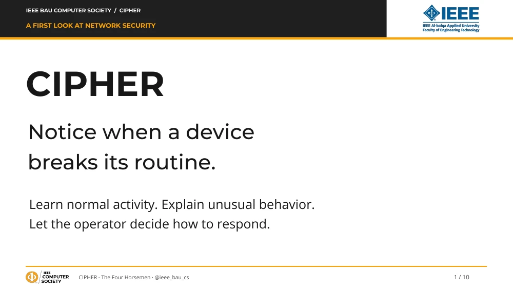
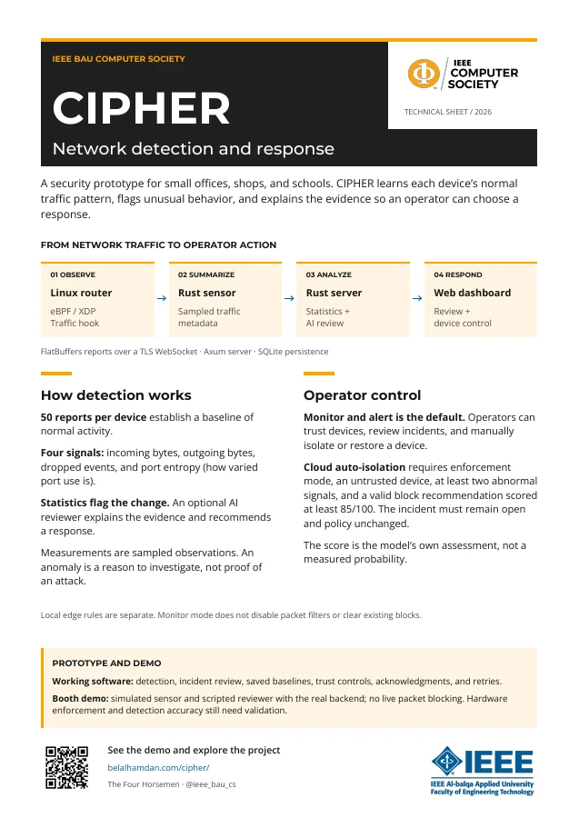

The control plane is in place.
- Statistical alerts and saved baselines
- Device trust and incident review
- Command acknowledgments and retries
- Reconnect handling and provider fixture tests
Network detection & response
Every device has a routine. CIPHER learns it, makes unusual activity understandable, and puts the response in your hands.
A student-built prototype for small networks.
Two signals change. An alert is raised; the device stays connected in monitor mode.
A project by The Four Horsemen
IEEE BAU Computer Society
A laptop starts trying unfamiliar ports. A quiet device suddenly sends more data. What changed—and is it worth investigating?
An existing firewall decides which traffic is allowed. CIPHER adds a device’s behavioral context, brings the evidence together, and helps an operator choose a response.
Unusual is a signal, not a verdict.
A legitimate administrator’s scan can look unusual too.
A packet is a small unit of network traffic. Follow its metadata from the Linux router to the person making the decision.
Small eBPF programs observe and filter packets at the router’s XDP receive hook.
LINUX · eBPF / XDPThe Rust sensor turns collected events into compact summaries of device activity.
RUST · FLATBUFFERSStatistics flag changes. An optional AI reviewer explains the evidence and advises.
AXUM · SQLITE · AI REVIEWThe dashboard brings incidents, device trust, and response controls to the operator.
REVIEW · TRUST · RESTOREReports travel over a TLS WebSocket. Commands return to the sensor, which acknowledges their application.
eBPF runs small, verified programs in the Linux kernel, the core of the operating system. XDP is the receive hook used here; the current loader uses generic/SKB mode. The kernel emits events through a ring buffer. The Rust daemon aggregates metadata, with HyperLogLog used to estimate distinct addresses.
Reports use FlatBuffers, a compact binary format, over a TLS WebSocket. The control plane uses Rust, Axum and SQLite. Baselines, device trust and local blocks persist. A durable outbox, acknowledgments and retries help the sensor recover after disconnects.
The outbox retains up to 10,000 reports. Successful retries are deduplicated, but a crash between ingestion and receipt storage can still create duplicates. Reports older than 60 seconds are stored without driving current cloud isolation decisions. Telemetry retention is 24 hours.
A camera and a laptop should not share the same expectations. CIPHER builds a baseline for each device, then compares new reports with its usual level and variation.
The starting point for a device’s baseline.
Representative activity matters.
These are sampled observations, not complete connection counts or exact throughput. Traffic direction still needs validation on a real gateway.
Incoming payload observed
Outgoing payload observed
Reported packet events blocked
How varied the use of ports is
A deviation score above 3 can raise an alert.Charts are illustrative.
The score measures distance from the average, divided by a scale that accounts for normal variation:
score = abs(observed − mean) / scale
scale = max(standard deviation, floor, abs(mean) × 0.1)The minimum scales are 4,096 bytes for each byte signal, 5 for dropped events and 0.25 for port entropy. These floors stop a tiny change after constant traffic from producing an enormous score.
Illustrative example: a baseline of 10 KiB, a new observation of 34 KiB and a scale of 4 KiB produce a score of 24 ÷ 4 = 6. That exceeds the threshold of 3. It does not tell us why the change happened.
The baseline stays fixed until reset; the training reports should represent ordinary activity. The default alert/review cooldown is 120 seconds. Thresholds and detection accuracy still need evaluation against real traffic.
Statistics raise the flag. The model reviews the evidence. For cloud-reviewed automatic isolation, every condition must hold.
You can review incidents, mark false positives, trust devices, and manually isolate or restore them.
Automatic response is enabled, and the device is not trusted.
At least two statistical signals are abnormal.
The reviewer recommends blocking with a score of at least 85/100.
The incident remains open, and the policy revision has not changed.
The model’s score is its own assessment, not measured accuracy. A failed review cannot authorize this cloud response; statistical alerts remain available.
The router also has local heuristics, including flagged-event volume and TCP reset/SYN ratios. Their automatic device isolation respects enforcement mode and trust, but does not require an AI review. Existing protocol, IP and DNS packet filters are separate: monitor mode does not disable them or remove existing blocks.
CIPHER does not decrypt HTTPS or send message bodies to the reviewer. The kernel does parse headers and selected DNS fields for filtering. Report metadata can include device identifiers; it should not be treated as anonymous.
Provider adapters support Anthropic and OpenAI-compatible endpoints. The default offline demo uses a labeled scripted reviewer. A real provider or local model requires separate configuration and connection testing.
Meet the actual software. Follow an incident from its measurements to the operator’s next step.
A simulated scan changes the device’s pattern.
The incident shows what deviated and why.
Review, trust, or request device isolation.
Start with normal activity. The dashboard shows a device and its learned baseline. The default response mode is monitoring.
Introduce unusual traffic. A simulated scan changes several measurements. An incident shows the evidence and a plain-language explanation. In monitor mode, the device stays connected.
Enable automatic response. Repeat the scenario. The server requests isolation when the gate passes; the dashboard waits for the simulated sensor’s acknowledgment.
Trust and recovery. Trusting the device preserves alerts and exempts it from automatic isolation. A reviewer failure leaves statistical alerts available without authorizing a cloud block. Reset prepares the next demonstration.
For the full presenter-led sequence, run python3 scripts/booth.py tour after starting the demo. See the demo guide.
This is a prototype with a repeatable software demonstration. Its security outcomes still need to be measured.
A sensor map acknowledgment alone does not prove packet blocking. Detection accuracy and performance have not been established. Read the readiness audit
Start with the overview. Trace one report through the code. Or bring the technical sheet to the next conversation.

A student introduction with diagrams and technical speaker notes.

Presenting CIPHER? Open the presenter notes